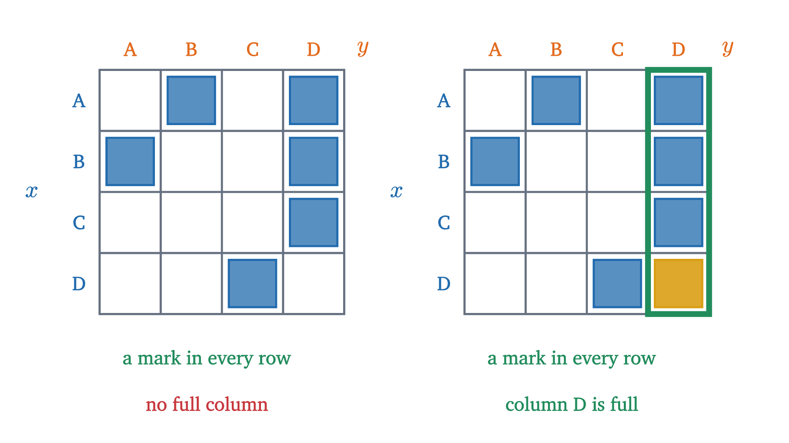

Quantifiers: for all, there exists, and negation
Everyone loves someone" has two meanings. Quantifiers separate them, show how to negate each, and turn the epsilon-delta definition of a limit into a game.
AssumesTruth tables: and, or, not as calculationIf-then statements: converse and contrapositive
“Everyone loves someone.” Does that say each person has somebody they love, possibly a different somebody for each? Or does it say there is one particular person who is loved by all? English allows both, and the two claims are far apart: the first is true in most families, and the second is true of almost no group of people.
In conversation the ambiguity is harmless. In mathematics the same pair of readings sits inside the definition of a limit, and choosing the wrong one produces a definition that almost no function satisfies. So we need a notation that forces a choice, and rules for working with it.
This lesson leans on two earlier ones. From truth tables: a statement is a sentence that is true or false; $\land$, $\lor$, $\lnot$ mean “and”, “or”, “not”; and De Morgan’s laws say $\lnot(P \land Q) \equiv \lnot P \lor \lnot Q$ and $\lnot(P \lor Q) \equiv \lnot P \land \lnot Q$. From implication: $P \to Q$ is false only when $P$ is true and $Q$ is false, so it is true whenever $P$ is false, and its negation is $P \land \lnot Q$.
Predicates and the two quantifiers
The sentence “$x^2 < 30$” is not a statement, because it is neither true nor false until we know $x$. It becomes a statement when a value is put in: “$3^2 < 30$” is true and “$6^2 < 30$” is false. Such a sentence is called a predicate, and the values allowed for $x$ form its domain.
There is a second way to turn a predicate into a statement, which is to say how many values of the domain satisfy it. Take the domain $\{1, 2, 3, 4, 5, 6\}$ and check them one at a time.
Each clause matches the scan. One counterexample, $x = 6$, was enough to make the universal statement false, and five agreeing values could not save it. One witness was enough to make the existential statement true. On a finite domain a quantifier is a long connective: $\forall x\, P(x)$ is $P(1) \land P(2) \land \dots \land P(6)$, and $\exists x\, P(x)$ is $P(1) \lor P(2) \lor \dots \lor P(6)$.
The domain is part of the statement. “$\exists x\; (x^2 = 2)$” is false if $x$ ranges over the integers and true if it ranges over the real numbers. “$\forall x\; (x^2 \ge x)$” is true over the integers and false over the reals, where $x = \frac12$ is a counterexample. When the domain is not written, it must be clear from context.
Often we quantify over part of a domain, as in “every $x > 0$”. This is shorthand with a fixed meaning, and the two quantifiers unpack differently:
Pause and try
True or false? (a) $\forall x \in \mathbb{R}\; (x^2 > 0)$. (b) $\exists n \in \mathbb{Z}\; (n^2 = n)$. (c) “Every unicorn in this room is purple”, that is, $\forall x \in U\; \text{Purple}(x)$ where $U$ is the set of unicorns in the room, which is empty.
Show answerHide answer
(a) False: $x = 0$ is a counterexample. (b) True: $n = 1$ is a witness, and so is $n = 0$. (c) True. A universal statement is false only if there is a counterexample, and an empty domain contains none. This is the vacuous truth of the conditional again, since the claim is “for every $x$, if $x$ is a unicorn in this room then $x$ is purple” and the hypothesis is always false. Over an empty domain every $\forall$ statement is true and every $\exists$ statement is false.
How to say “no”
Someone claims that all swans are white. What must be the case for the claim to be false? A common first answer is “no swans are white”, and it overshoots badly. The claim is refuted by one black swan in a lake of white ones.
On the finite example this is De Morgan’s law at work on a long conjunction.
When $D$ is finite, with $n$ elements, these rules are De Morgan’s laws for $n$ statements, which follow from the two-statement laws by induction on $n$: peel off the last piece, apply the two-statement law, and use the case of $n - 1$ on the rest. When $D$ is infinite there is no table to check, and the argument from the definitions above is the whole proof. The rules are sometimes called the generalized De Morgan laws.
A restricted domain stays as it is under negation. For example $\lnot\,\forall x > 0\; Q(x)$ unpacks to $\lnot \forall x\,(x > 0 \to Q(x))$, which is $\exists x\, \lnot(x > 0 \to Q(x))$, which is $\exists x\,(x > 0 \land \lnot Q(x))$: there is a positive $x$ for which $Q$ fails. Only the quantifier and the predicate changed.
Pause and try
Negate each statement, and say which of the pair is true. (a) “Some prime number is even.” (b) $\forall x \in \mathbb{R}\; (x > 0 \to x^2 > x)$.
Show answerHide answer
(a) “Every prime number is odd.” The original is true, with witness 2, so the negation is false. (b) $\exists x \in \mathbb{R}\; (x > 0 \land x^2 \le x)$. Here the negation is true, with witness $x = \frac12$, since $\frac14 \le \frac12$. So the original is false.
Two quantifiers: the order matters
Now we can separate the two readings of the opening sentence. Let the domain be four people, A, B, C and D, and let $L(x, y)$ mean “$x$ loves $y$”. This predicate has two variables, and each needs a quantifier:
- $\forall x\, \exists y\; L(x, y)$: for every person $x$ there is a person $y$ whom $x$ loves.
- $\exists y\, \forall x\; L(x, y)$: there is a person $y$ whom every person $x$ loves.
To test them we need to know who loves whom. Here is one possibility.
With the six arrows of the first slide, $\forall x\, \exists y\; L(x, y)$ is true and $\exists y\, \forall x\; L(x, y)$ is false. The same relation, the same two quantifiers, and opposite truth values. So the order in which quantifiers are written is part of the meaning.
A grid makes the difference easy to see. Put $x$ down the side and $y$ across the top, and mark the cell $(x, y)$ when $L(x, y)$ is true.

A full column puts a mark in every row, but marks in every row need not line up in one column. That is the content of the next theorem.
The same thing with real numbers
Over the real numbers, compare $\forall x\, \exists y\; (y > x)$ with $\exists y\, \forall x\; (y > x)$. It helps to read them as a game between you and me, with the moves made in the order the quantifiers are written. A $\forall$ is your move: you pick the value, trying to make me fail. An $\exists$ is my move. Whoever moves later can see the earlier moves.
In the first game I move second and answer your $x$ with $y = x + 1$. That is a winning strategy, so $\forall x\, \exists y\; (y > x)$ is true. In the second I must name one $y$ before you move, and you reply with $x = y$. To prove it false properly, negate it with the theorem, one quantifier at a time:
and this is true, with $x = y$ as the witness for each $y$.
The game is a way of reading the definitions and adds nothing to them: “for every $x$ there is a $y$” says exactly that whatever $x$ is chosen, a suitable $y$ can be found afterwards. One caution. Two quantifiers of the same kind may be swapped freely, since $\forall x\, \forall y$ and $\forall y\, \forall x$ both say “for all pairs”, and likewise for $\exists$. Only a $\forall$ next to an $\exists$ is sensitive to order.
The limit definition as a game
The best known sentence with three alternating quantifiers is the definition of a limit. Let $a$ be a real number and let $f$ be a function defined at every point of some open interval containing $a$, except possibly at $a$ itself. Then $\lim_{x \to a} f(x) = L$ means
The calculus lesson writes the last part as “$0 < |x - a| < \delta$ implies $|f(x) - L| < \varepsilon$”. The word “implies” there carries a silent “for every $x$”, which is the third quantifier, and $x$ ranges over the points where $f$ is defined.
As a game: you choose a tolerance $\varepsilon$. I answer with a distance $\delta$, which may depend on your $\varepsilon$. You then choose any $x$. I win if the conditional holds, which means that either your $x$ is not within $\delta$ of $a$ (or equals $a$), and the conditional is vacuously true, or else $f(x)$ is within $\varepsilon$ of $L$. The limit is $L$ exactly when I have a strategy that wins against every $\varepsilon$.
Take $f(x) = 2x + 1$, $a = 1$ and $L = 3$. Then $|f(x) - 3| = |2x - 2| = 2|x - 1|$, so my strategy is $\delta = \varepsilon / 2$: if $|x - 1| < \delta$ then $|f(x) - 3| < 2\delta = \varepsilon$.
The order $\forall \varepsilon\, \exists \delta$ is the first reading of “everyone loves someone”: each $\varepsilon$ gets its own $\delta$. Swap the two and you get $\exists \delta > 0\; \forall \varepsilon > 0\; \forall x\,(\dots)$, which demands one window that works for every tolerance at once. That forces $|f(x) - L|$ to be smaller than every positive number, so $f(x) = L$ exactly throughout the window. Even $2x + 1$ fails this. The definition of a limit depends on the order of its quantifiers.
Pause and try
Write out the negation of the limit definition: what does it mean that $L$ is not the limit of $f(x)$ as $x \to a$? Remember that $\forall \varepsilon > 0$ and $\exists \delta > 0$ keep their restrictions, and that the negation of $A \to B$ is $A \land \lnot B$.
Show answerHide answer
In the negated game the roles are exchanged. Now I move first, with a single $\varepsilon$, and I must beat every $\delta$ you offer. Let $f(x) = 1$ for $x > 0$ and $f(x) = -1$ for $x < 0$, and suppose you claim that $\lim_{x \to 0} f(x) = 1$.
Written as a proof: take $\varepsilon = 1$. Let $\delta > 0$ be arbitrary and put $x = -\delta/2$. Then $0 < |x - 0| = \delta/2 < \delta$, and $|f(x) - 1| = |-1 - 1| = 2 \ge 1$. This establishes $\exists \varepsilon\, \forall \delta\, \exists x\,(\dots)$, the negation of the claim. Notice the shape of the proof: one $\varepsilon$ exhibited, an arbitrary $\delta$ handled, and an $x$ produced that depends on $\delta$.
Worked examples
Common mistakes and edge cases
Two edge cases. Over an empty domain $\forall x\, P(x)$ is true and $\exists x\, P(x)$ is false, so “for all” does not imply “there exists” unless the domain has at least one element. And “there exists” means at least one: if you want exactly one, say “there exists a unique $x$”, which is the conjunction of $\exists x\, P(x)$ with $\forall x\, \forall y\,\bigl((P(x) \land P(y)) \to x = y\bigr)$.
Stepping back
The hard part was noticing that English hides two things a mathematical sentence must show: which variables are “all” and which are “some”, and in what order they are chosen. Once those are written down, truth is a matter of who can win a game, and negation is a mechanical exchange of the two players. Nearly every definition in analysis, including continuity, convergence and boundedness, is a short string of quantifiers, and reading one comes down to asking who moves when.
Check yourself
What is the negation of “every student has read some book on the list”?
Problems
Problems 1 to 3 repeat the moves of the lesson, 4 to 6 combine them, and 7 and 8 go further.
Problem 1
Decide whether each statement is true, giving a witness, a counterexample or a short reason. (a) $\forall n \in \mathbb{Z}\; (n^2 \ge n)$. (b) $\exists x \in \mathbb{R}\; (x^2 < x)$. (c) $\forall x \in \mathbb{R}\; \exists y \in \mathbb{R}\; (xy = 1)$. (d) $\exists y \in \mathbb{R}\; \forall x \in \mathbb{R}\; (xy = 0)$.
Show solutionHide solution
(a) True. If $n \le 0$ then $n^2 \ge 0 \ge n$. If $n \ge 1$ then $n^2 = n \cdot n \ge n \cdot 1 = n$. Every integer is in one of the two cases. (b) True, with witness $x = \frac12$: $\frac14 < \frac12$. (c) False: $x = 0$ is a counterexample, since $0 \cdot y = 0 \ne 1$ for every $y$. (d) True, with witness $y = 0$: $x \cdot 0 = 0$ for every $x$.
Problem 2
Negate each statement, moving the negation all the way in. (a) $\forall x \in \mathbb{R}\; (x^2 \ne 2)$. (b) $\exists n \in \mathbb{N}\; \forall m \in \mathbb{N}\; (m \le n)$. (c) $\forall x \in \mathbb{R}\; (x > 2 \to x^2 > 4)$. For (b), say which of the statement and its negation is true.
Show solutionHide solution
(a) $\exists x \in \mathbb{R}\; (x^2 = 2)$. (b) $\forall n \in \mathbb{N}\; \exists m \in \mathbb{N}\; (m > n)$. The original says there is a largest natural number. The negation is true, with witness $m = n + 1$ for each $n$, so the original is false. (c) $\exists x \in \mathbb{R}\; (x > 2 \land x^2 \le 4)$, using the fact that the negation of $A \to B$ is $A \land \lnot B$.
Problem 3
On the domain $\{A, B, C\}$ the relation $L$ consists of exactly the pairs $(A, B)$, $(B, B)$ and $(C, A)$. Decide the truth of $\forall x\, \exists y\; L(x, y)$, $\exists y\, \forall x\; L(x, y)$, $\exists x\, \forall y\; L(x, y)$ and $\forall y\, \exists x\; L(x, y)$.
Show solutionHide solution
Draw the grid with rows $x$ and columns $y$: row A has a mark in column B, row B in column B, row C in column A. (1) Every row has a mark, so $\forall x\, \exists y\; L$ is true. (2) A full column is needed: column B has marks from A and B but not C, and columns A and C have fewer. False. (3) A full row is needed, and every row has only one mark. False. (4) Every column needs a mark, and column C has none. False.
Problem 4
Consider “for every positive real number there is a smaller positive real number”. Write it with quantifiers and decide whether it is true. Then swap the two quantifiers, say in words what the new statement claims, and decide whether it is true.
Show solutionHide solution
$\forall x > 0\; \exists y > 0\; (y < x)$. True: given $x$, take $y = x/2$, which is positive and less than $x$. Swapped: $\exists y > 0\; \forall x > 0\; (y < x)$, “there is a positive real number smaller than every positive real number”. This is false. Its negation is $\forall y > 0\; \exists x > 0\; (y \ge x)$, which is true with $x = y$.
Problem 5
Play the limit game for $f(x) = 3x - 1$ at $a = 2$ with $L = 5$: give a strategy for choosing $\delta$ from $\varepsilon$ and prove that it wins.
Show solutionHide solution
We have $|f(x) - 5| = |3x - 6| = 3|x - 2|$. Strategy: given $\varepsilon > 0$, choose $\delta = \varepsilon / 3$. Now let $x$ be any number with $0 < |x - 2| < \delta$. Then $|f(x) - 5| = 3|x - 2| < 3\delta = \varepsilon$. The conditional holds for every $x$, so $\forall \varepsilon > 0\, \exists \delta > 0\, \forall x\,(\dots)$ is true and $\lim_{x \to 2}(3x - 1) = 5$. For instance, against $\varepsilon = 0.03$ the reply is $\delta = 0.01$.
Problem 6
“There are infinitely many primes” can be written $\forall n \in \mathbb{N}\; \exists p \in \mathbb{N}\; (p > n \land p \text{ is prime})$. Write its negation with the negation moved all the way in, and say in words what the negation claims.
Show solutionHide solution
Flip both quantifiers and negate the predicate with De Morgan’s law: $\exists n \in \mathbb{N}\; \forall p \in \mathbb{N}\; (p \le n \lor p \text{ is not prime})$. By the equivalence $\lnot A \lor B \equiv A \to B$, the bracket can also be written “$p$ is prime $\to p \le n$”. In words: there is a number $n$ such that every prime is at most $n$, that is, the primes are bounded above. (Euclid proved that this negation is false.)
Problem 7
Use the negated definition to prove that $\lim_{x \to 1} (2x + 1)$ is not $3.5$.
Show solutionHide solution
We need $\exists \varepsilon > 0\; \forall \delta > 0\; \exists x\; (0 < |x - 1| < \delta \land |2x + 1 - 3.5| \ge \varepsilon)$. Choose $\varepsilon = 0.25$. Let $\delta > 0$ be arbitrary, and pick any $x$ with $0 < |x - 1| < \delta$ and also $|x - 1| < 0.1$ (for instance $x = 1 + \min(\delta, 0.1)/2$). Then $|(2x + 1) - 3| = 2|x - 1| < 0.2$, so $2x + 1$ lies between $2.8$ and $3.2$, and its distance from $3.5$ is more than $0.3$, which is at least $0.25$. Both parts of the conjunction hold.
Problem 8
Let $f(x) = 1$ for $x > 0$ and $f(x) = -1$ for $x < 0$. The lesson showed that 1 is not the limit of $f$ at 0. Prove that no real number $L$ is: write the statement “$f$ has no limit at 0” with quantifiers, and prove it.
Show solutionHide solution
“$f$ has a limit at 0” is $\exists L\, \forall \varepsilon > 0\, \exists \delta > 0\, \forall x\,(0 < |x| < \delta \to |f(x) - L| < \varepsilon)$. Its negation is
Let $L$ be any real number and choose $\varepsilon = 1$. Let $\delta > 0$ be arbitrary. Consider the two points $x_1 = \delta/2$ and $x_2 = -\delta/2$; both satisfy $0 < |x| < \delta$, and $f(x_1) = 1$, $f(x_2) = -1$. If both $|1 - L| < 1$ and $|-1 - L| < 1$ held, the triangle inequality would give $2 = |1 - (-1)| \le |1 - L| + |L - (-1)| < 2$, which is impossible. So at least one of $|f(x_1) - L| \ge 1$, $|f(x_2) - L| \ge 1$ holds, and we choose $x$ to be that point. Notice the order of dependence: $\varepsilon$ did not depend on $L$ here, but $x$ depended on both $\delta$ and $L$, as the quantifiers allow.